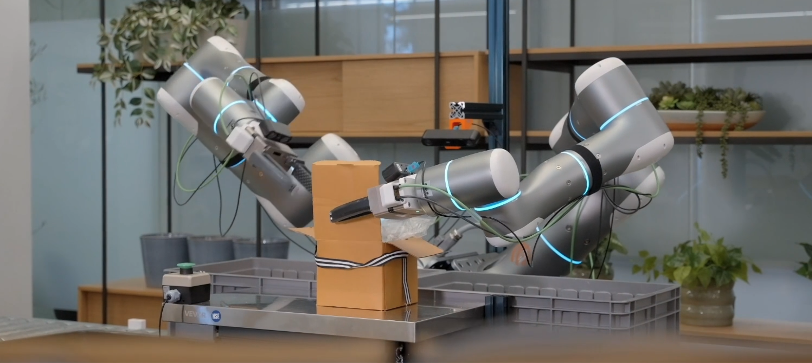

Global Seed Radar: rhoda-ai
March 10, 2026 · Robotics/AI
Quick Snapshot
| Field | Info |
|---|---|
| Founded | Late 2024 (Exited stealth March 10, 2026) |
| HQ | Palo Alto, CA |
| Industry | Robotics/AI |
| Website | rhoda.ai |
| Funding | 450M Series A at a $1.7B valuation |
What They Do
Rhoda AI is building a "general-purpose bimanual manipulation platform" designed to operate in unpredictable, unstructured, real-world environments. While traditional robots excel in controlled settings with pre-programmed paths, they fail when faced with minor environmental changes. Instead of relying solely on traditional reinforcement learning or human teleoperation data—which is expensive and hard to scale—Rhoda AI introduced FutureVision, a proprietary architecture they call a Direct Video Action (DVA) model.

Pre-training.
They train their models on hundreds of millions of internet videos to build a strong "prior" understanding of physics, motion, and physical interactions.
Post-training.
They fine-tune the model using a smaller subset of actual robot telemetry to teach embodiment-specific behaviors.
Execution.
The system continuously observes the environment, predicts future states as video, and converts those predictions into physical actions in a closed loop every few hundred milliseconds.
Their hardware is heavily focused on bimanual manipulation (two arms working in tandem) and is reportedly designed to handle both complex dexterity (like unboxing) and heavy lifting, a major hurdle for current humanoid prototypes.
How They Make Money
While their exact SaaS/RaaS (Robotics-as-a-Service) pricing model isn't public, they are targeting enterprise logistics and manufacturing. The newly raised capital is explicitly earmarked for expanding industrial deployments and customer pilots with leading partners in these sectors.
In the near term, revenue will likely come from paid pilot programs where their robots tackle specific, high-friction supply chain tasks. Long-term, they will likely transition to a scalable leasing or software-licensing model based on deployment scale.
The Moat: Foundational Uniqueness & Scalability
Rhoda AI’s defensibility hinges on solving the "robustness gap"—the failure rate that occurs when a robot moves from a pristine lab to a messy warehouse with different lighting, shifting layouts, and unseen objects.
Their moat consists of:
A novel data pipeline.
By treating internet video as the primary training ground for physical commonsense, they bypass the bottleneck of manually teleoperating robots to gather training data.
Closed-loop dynamic feedback.
Unlike open-loop vision-language-action (VLA) models that generate a plan and blindly execute it, Rhoda’s DVA model updates its behavior dynamically based on continuous stereo-camera feedback.
Elite Talent.
The intersection of Jagdeep Singh's proven hardware-scaling experience (QuantumScape) with top-tier Stanford and Berkeley research talent.
Funding
Rhoda AI has massive financial backing. On March 10, 2026, they announced a $450 million Series A, valuing the company at $1.7 billion.
Lead Investor: Premji Invest
Notable Backers: Khosla Ventures, Temasek Holdings, and John Doerr.
Our Take
What we like
The "Video-First" Approach.
Leveraging internet-scale video to teach robots physics is a brilliant way to solve the data scarcity problem that has historically bottlenecked robotics.
Heavy-Hitting Leadership. Jagdeep Singh knows how to scale incredibly difficult, capital-intensive hardware (having taken QuantumScape to a massive valuation).
Focus on the "Robustness Gap". They aren't building a cool lab demo; their entire architecture is designed to handle the messy, slightly-off-center realities of actual warehouses.
What to watch
Simulation vs. Reality.
Can predicting video frames truly translate to understanding tactile force, friction, and resistance when lifting heavy, deformable objects?
The Valuation Hype.
A $1.7 billion valuation at Series A means the market is pricing them for perfection. They will need to show fast, scalable commercial pilots to justify the hype.
Fierce Competition.
They are entering a bloodbath of well-funded embodied AI startups (Figure AI, Physical Intelligence, Genesis AI, Tesla). Maintaining a technical edge will be expensive and difficult.